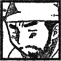

［丸井草次郎］ 漫画『みつどもえ』に登場するキャラクター
丸井草次郎
コミックス紹介文
丸井草次郎
丸井家三つ子の父親。みつばには嫌われ、ふたばには好かれ、ひとはには無視され、他人からは変質者だと思われている。
柱紹介文
丸井草次郎①
三つ子の父。その風体から、とにかく交番までご同行願われる。
わりとどうでもいいキャラクターに関するメモ
当初はスキンヘッドだったのですが違う意味で怖いのでやめました。
柱紹介文カット
 | 元絵は195卵性「墓地を見おろす黒い家」の５ページ目、家出して丸井家に転がり込んできた松岡に「さすが三女さんのお父様」と言われて照れるコマより。 |
上記に掲載した画像は資料としての必要性から『みつどもえ』『週刊少年チャンピオン』『別冊少年チャンピオン』（秋田書店）誌上より引用させていただいているものであり、全ての著作権は原権利者に属します。
登場エピソード
◎主役 〇準主役 ▲重要 △ちょい役
| 0009 | 話数 | サブタイトル | 収録 | 役回り | |
|---|---|---|---|---|---|
| 0110 | 11 | 「お父さんは心配性な不審者」 | １巻 | ◎ | 三つ子のパンツを届けに。泥棒扱いされて警察に連行。 |
| 0120 | 12 | 「みつばと！」 | １巻 | △ | 怪我して帰ったみつばを見て、思わずバットを手に。 |
| 0160 | 16 | 「パパと踊る前夜祭」 | １巻 | ◎ | 深夜にふたばとふたりきりで運動会リハーサル。 |
| 0200 | 20 | 「僕はパンツに恋をする」 | ２巻 | チクビとベッタリのひとはを見守る。 | |
| 0210 | 21 | 「ヒゲとボイン」 | ２巻 | ◎ | 授業参観に眉無しスキンヘッドのイカツい姿で現れる。 |
| 0280 | 28 | 「じゃじゃ馬シェイプ★UP」 | ２巻 | △ | ふたばに馬乗りするみつばに外でやれと言う。 |
| 0290 | 29 | 「サンタがすぐうしろにやってくる」 | ２巻 | ▲ | クリスマスに熱でダウンし、ひとはにサンタ役を託す。 |
| 0310 | 31 | 「やわらか霊柩車」 | ２巻 | 朝ご飯の場面。 | |
| 0330 | 33 | 「無口な呪文は天然温泉」 | ２巻 | ▲ | ふたばにお風呂で遊ぶおもちゃを買ってくる。 |
| 0340 | 34 | 「親指さがし」 | ２巻 | ▲ | ふたばが作ったグログロした夜ご飯を見て絶句。 |
| 0350 | 35 | 「それでもパパはやってない」 | ２巻 | ◎ | バレンタインに学校に侵入し、誘拐犯と誤解される。 |
| 0370 | 37 | 「スニーカーぶる～ん」 | ２巻 | △ | 父の姿を見つけたふたばが靴を捨てて駆け寄る。 |
| 0380 | 38 | 「お薬のおじかん」 | ２巻 | △ | 痔の薬を知らないかと尋ねに。 |
| 0420 | 42 | 「本域変態ガチレンジャー」 | ３巻 | △ | ひとはに掃除機をぶつけられる。 |
| 0430 | 43 | 「好き好き大好き」 | ３巻 | ▲ | 小学生時代の写真が佐藤のものと誤認される。 |
| 0490 | 49 | 「姉がニャーと泣く日」 | ３巻 | ▲ | 河川敷から猫(チブサ)を連れて帰る。 |
| 0500 | 50 | 「人食いハウス」 | ３巻 | 〇 | 家庭訪問に来た矢部とひとはの様子を見て激怒。 |
| 0540 | 54 | 「パパとムスメの１時間」 | ３巻 | 〇 | 昔の写真が話題に。みつばに愛してると言われる。 |
| 0560 | 56 | 「ふたばさん チェンジ！」 | ３巻 | ▲ | みつばになりきったふたばの罵倒で大ショック。 |
| 0590 | 59 | 「判子の旅」 | ４巻 | ▲ | ラジオ体操のハンコ係で子供に避けられて傷つく。 |
| 0600 | 60 | 「無抵抗平ら系水泳部どうしよう」 | ４巻 | ▲ | プールに入ろうとひとはを促し、監視員に詰問される。 |
| 0670 | 67 | 「ふしぎなベルト」 | ４巻 | ▲ | ひとはのベルトの件を知っていた。みつばにお仕置き。 |
| 0680 | 68 | 「わたしと姉とオバケたち」 | ４巻 | ふたばの肩叩きのイメージ。 | |
| 0730 | 73 | 「ぷるるんっ！ふーとキャンプ」 | ４巻 | オチのコマ。みつばの腹筋を見守る。 | |
| 0740 | 74 | 「ちぇんじ２」 | ４巻 | △ | 風邪を引いたふたばに厚着させる。 |
| 0770 | 77 | 「ＷＣ公共密室機構」 | ４巻 | △ | 大晦日。みかんが腐ってることに気付く。 |
| 0800 | 80 | 「モーニングコーヒーおかわり」 | ５巻 | △ | コタツで温めていたみつばのパンツを被る。 |
| 0830 | 83 | 「さくらんぼしんどうローム」 | ５巻 | △ | 中古のバイブシェイプベルトを買ってくる。 |
| 0920 | 92 | 「バカとテストと召還乳」 | ５巻 | ▲ | ふたばのテストの点数が生んだ偶然に驚く×２。 |
| 0940 | 94 | 「ふくびきアンバランス」 | ５巻 | △ | 遊園地のチケットを巡るみつばの様子に…。 |
| 0970 | 97 | 「おやこくらぶ」 | ５巻 | 〇 | みつばが携帯を買って欲しいと訴えるが認めない。 |
| 0980 | 98 | 「ママと小学６年生」 | ６巻 | ▲ | 授業参観。ふたばの案で生徒に変装して侵入。 |
| 0990 | 99 | 「べっとべっとさん」 | ６巻 | ベッドが崩壊した音を聞いて駆け込んでくる。 | |
| 1040 | 104 | 「ガールズスプリンクラー」 | ６巻 | ▲ | エアコンを棒で叩くみつばを目撃。 |
| 1050 | 105 | 「夏のわたし」 | ６巻 | ひとはの絵日記。 | |
| 1080 | 108 | 「うつるんです」 | ６巻 | みつばの盗み食いを叱る。 | |
| 1120 | 112 | 「同じ空の下の下」 | ６巻 | ◎ | 運動会。パンイチでひとはとの親子二人三脚に臨む。 |
| 1140 | 114 | 「小生トばしすぎ」 | ６巻 | △ | ふたばの漫画の登場人物（超絶イケメン）に。 |
| 1190 | 119 | 「ぐるぐる」 | ７巻 | ▲ | 杉崎と回転寿司屋に。みつばの言葉に思わず涙。 |
| 1200 | 120 | 「スィミン不足」 | ７巻 | ▲ | ベッドの段を巡って争うみつばとひとはに呆れる。 |
| 1240 | 124 | 「サンタが息を殺してやってくる」 | ７巻 | ▲ | クリスマス。パンイチで潜んでいた矢部をボコる。 |
| 1280 | 128 | 「鬼菓子間」 | ７巻 | 帰宅したら、拘束されているみつばたちを見つける。 | |
| 1350 | 135 | 「Pinkな遺伝子」 | ８巻 | ▲ | 保護者懇談会で矢部の失態を告発。 |
| 1450 | 145 | 「佐藤家の食卓」 | ８巻 | 〇 | ふたばが佐藤家に泊まりに行き、落ち着かない。 |
| 1520 | 152 | 「祖母とＴシャツと私」 | ８巻 | ▲ | 母(三つ子の祖母)が家に泊まりに来る。 |
| 1540 | 154 | 「太陽と地味な教室」 | ９巻 | △ | ひとはの頭で踏みつけるふたばを見て叱る。 |
| 1630 | 163 | 「へ～んしん!!～ひとはバーディーラッシュ」 | ９巻 | モブ。朝のゴルフ番組の場面。 | |
| 1680 | 168 | 「ぼっこぼこ」 | ９巻 | ◎ | 数年ぶりの一人風呂を嘆き、矢部と裸の付き合い。 |
| 1710 | 171 | 「銀盤カレイドズコー」 | ９巻 | スケートで頭を打って帰宅したみつばに…。 | |
| 1730 | 173 | 「一緒にトレーニング」 | １０巻 | 〇 | みつばとジョギング中、姿が見えなくなる。 |
| 1820 | 182 | 「ENGEL VOICE」 | １０巻 | ひとはのイメージ。食費の件。 | |
| 1850 | 185 | 「スーパーミラクル☆トレイン」 | １０巻 | 〇 | 一家で動物園へ。痴漢と間違われることを語る。 |
| 1890 | 189 | 「三女さんはいつも寝不足」 | １０巻 | ひとはが描いた似顔絵。 | |
| 1950 | 195 | 「墓地を見おろす黒い家」 | １１巻 | 〇 | 家出してきた松岡の前で昔はモテていたと見栄を張る。 |
| 1980 | 198 | 「胸当てを揺らす手」 | １１巻 | モブ。朝ご飯の場面。 | |
| 1990 | 199 | 「おもひでおろおろ」 | １１巻 | 〇 | 迷子の龍太をあやすため三つ子が始めた劇で悪役に。 |
| 2000 | 200 | 「帰路の旅」 | １１巻 | モブ。最後の朝ご飯の場面。 | |
| 2130 | 213 | 「食卓のお肉が来るまで」 | １２巻 | みつばのイメージ。国産和牛。 | |
| 2240 | 224 | 「正解はひとつ！じゃないんだからねっ!!」 | １２巻 | △ | 一郎太に連行されたまま放置されていた。 |
| 2320 | 232 | 「うちの子ルンパ」 | １２巻 | ▲ | パンツを載せたルンパの前で警察に見張られている。 |
| 2360 | 236 | 「最終実況計画」 | １３巻 | ▲ | 運動会でトップレスのみつばを見て大声で実況。 |
| 2380 | 238 | 「ゴーストバストアーズ」 | １３巻 | ▲ | お化けを怖がり登校をしぶるふたばに嘘を教える。 |
| 2400 | 240 | 「ジュエルベッド」 | １３巻 | 夜に騒いでいる娘たちにひと言。 | |
| 2440 | 244 | 「風邪のシレン」 | １３巻 | 三つ子が空き巣を退治した新聞記事を読んでいる。 | |
| 2600 | 260 | 「ペアレンツの肖像」 | １４巻 | 〇 | 授業参観。緒方に縄跳びで引かれて連れてこられる。 |
| 2630 | 263 | 「サンタが涅槃からやってくる」 | １４巻 | ▲ | 松岡にブラサンを届けるサンタ役のはずが、泥棒扱い。 |
| 2710 | 271 | 「ハンモックゲーム」 | １５巻 | 新しいベッドの購入に関して。 | |
| 2750 | 275 | 「ゴーストライダーズ」 | １５巻 | △ | ナマコちゃんのＣＭを見て吉岡家の話を聞く。 |
| 2780 | 278 | 「うけるひと」 | １５巻 | ひとはのイメージ。エンゲル係数が…。 | |
| 2870 | 287 | 「サンタがどこからもやってこない」 | １６巻 | ▲ | ふたばに託されたサンタに渡す手紙は緒方本体で…。 |
| 2900 | 290 | 「埼玉の小学生とひとの日記」 | １６巻 | ▲ | スマホを購入。ケンカしないようふたばに持たせる。 |
| 2920 | 292 | 「それでもやっぱり猫が好き」 | １６巻 | ▲ | 宮下の忘れ物を届けに後を追うが…。 |
| 3050 | 305 | 「背筋をもさっと…」 | １７巻 | ▲ | 運動会。ひとはの代わりにチアダンスの歌を歌う。 |
| 3170 | 317 | 「ルンパルーム」 | １８巻 | △ | うちにはまだ早かったとルンパを杉崎に返す。 |
| 3200 | 320 | 「ねことおはな」 | １８巻 | △ | 猫アレルギー克服に来ていた海江田にパンツを貸す。 |
| 3230 | 323 | 「長靴をはいたトコ」 | １８巻 | △ | ふたばと長靴の話。 |
| 3240 | 324 | 「ブレア・ウォッチ・プロジェクト」 | １８巻 | △ | 三つ子＆チーム杉崎によるキャンプの引率。 |
| 3320 | 332 | 「フリーマーケットダンジョン」 | １８巻 | △ | いかがわしい出品物ばかりで、フリマの絵面が闇市。 |
| 3330 | 333 | 「サンタが娑婆にやってくる」 | １９巻 | ◎ | ふたばに着替えを見つかりサンタとして過ごすことに。 |
| 8063 | 番外 | 三つ子今昔物語 | ６巻 | ◎ | 在りし日の姿。昔は無垢で可愛かった娘たちだが…。 |
| 8101 | 番外 | みつどもえ 行楽日和 | １０巻 | ◎ | ひとはのスカートに顔を突っ込む形になり…。 |
| 8161 | 番外 | みつどもえ 宮下仲良し大作戦★ | １６巻 | △ | 宮下がブリッジしているところに帰宅。 |
| 8181 | 番外 | みつどもえ キャンプの㊙事情 | １８巻 | 後ろを向いて立たされている。 |
ほぼ週刊みつどもえ
◎主役 〇準主役 ▲重要 △ちょい役
| 0009 | 話数 | サブタイトル | 収録 | 役回り | |
|---|---|---|---|---|---|
| 0090 | 9 | 「パパはフシンシャ？」 | １５巻 | ◎ | 学校に届け物をしたくないと、忘れ物がないかを確認。 |
| 0110 | 11 | 「真夜中の情事」 | １５巻 | ◎ | ふたばと運動会リハーサル。ふたばのヒモ。 |
| 0130 | 13 | 「パパの授業参観」 | １５巻 | ▲ | どうやって授業参観に来させるかが問題となる。 |
| 0260 | 26 | 「聖夜の丸井家」 | １６巻 | ◎ | 元気を取り戻し、サンタ服を着たところ…。 |
| 0380 | 38 | 「パパと娘のスキャンダル」 | １７巻 | 〇 | かつてのイケメン。みつばにキスされる。 |
| 0400 | 40 | 「なりきりゴッコ祭り」 | 〇 | ダメージを受けすぎて真っ白になって倒れている。 | |
| 0640 | 64 | 「楽しい遊園地」 | 〇 | 観覧車の中で、両側から娘に手を引かれてご満悦。 | |
| 0680 | 68 | 「女児携帯」 | ▲ | 三つ子の小芝居を見せられる。 | |
| 0690 | 69 | 「今夜は一緒に」 | △ | みつばに我慢しろと言う。 | |
| 0730 | 73 | 「一夫多妻制」 | ▲ | ふたばの結婚相手を聞いて殴り込み。 | |
| 0780 | 78 | 「カウントドォン」 | ▲ | 地震だと思って避難を促す。 | |
| 0820 | 82 | 「辞退理由を探る」 | △ | パパ本人と練習してほしい。 | |
| 0870 | 87 | 「寿司マスター杉」 | ▲ | 子供にはワサビは早いと言ったところ…。 | |
| 0970 | 97 | 「みつばのパンツ」 | １９巻 | △ | パンツを頭に被るみつばにあることを指摘。 |
| 0980 | 98 | 「ふたばとフィジカル」 | １９巻 | △ | ふたばの報告を聞く。 |
| 0990 | 99 | 「ひとはと偽装」 | １９巻 | ▲ | おばさんにじっと見つめるのはひとはだと教える。 |
| 1000 | 100 | 「家族の成長」 | １９巻 | ◎ | 時の移ろいの残酷さを改めて思い知ることに。 |
| キャラクターデータ | |
|---|---|
| 名前 | まるい そうじろう 丸井 草次郎 |
| 性別 | 男性 |
| 年齢 | ３０代後半（外見） |
| ポジション | 丸井三姉妹の父親 |
| 一人称 | 俺・パパ |
| 呼称 | パパ |
| 家族構成 | 丸井みつば(娘)・丸井ふたば(娘)・丸井ひとは(娘) |
| 初登場 | 11卵性「お父さんは心配性な不審者」 |
| アニメ版声優 | 天田益男 |
| その他データ | |
|---|---|
| 扉絵 | 無し |
| 背表紙 | みつどもえ１６巻 |
| あとがき | 無し |
| コミックス紹介 | みつどもえ３巻 |
| キャラメモ | みつどもえ３巻③ |
| 人気投票 | ２３位（－－票） |
| 名字初出 | 11卵性「お父さんは心配性な不審者」 |
| フルネーム判明 | 11卵性「お父さんは心配性な不審者」 |
秋田書店ストアがオープンするということですRT画像はランダム pic.twitter.com/Gm7JnpHhlk
— 桜井のりお@僕ヤバ⑧発売中＆TVアニメ2期決定 (@lovely_pig328) December 2, 2016
236 / 238 / 260